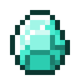
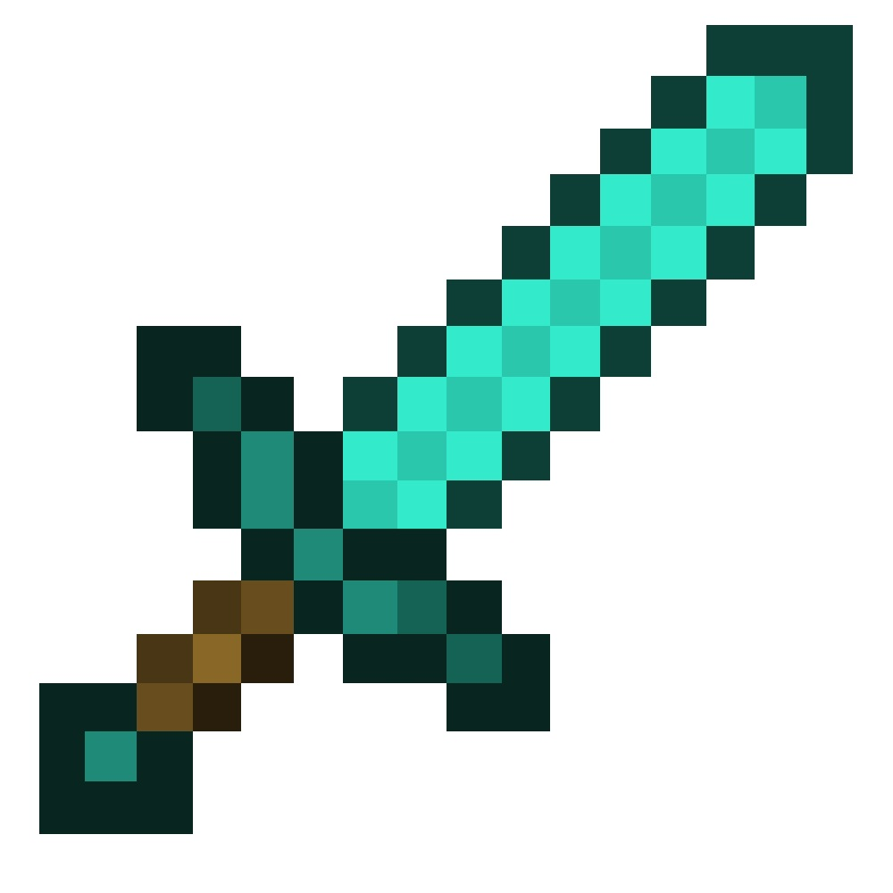
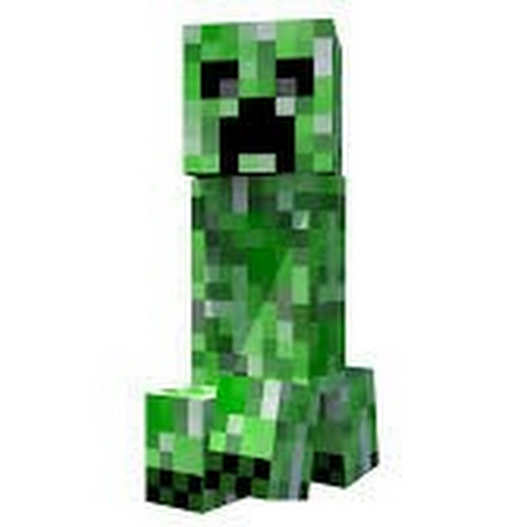

Мои достижения
-

18542
добытых ресурсов -

2500
созданных предметов -

6
месяцев выживания
Почему людям нравится Minecraft?
"Майнкрафт — это целый неизведанный мир, где можно делать что угодно; и веселиться с друзьями, играя вместе или друг против друга.
"Игра Minecraft привлекла меня своим кубическим стилем и огромными возможностями. Она нравится мне за своё многообразие. Игра подходит не только для развлечения, но и для обучения, программирования и творчества."
"Мне нравится Minecraft за возможность создания карт, за полную свободу действий. И просто хороший отдых с друзьями."